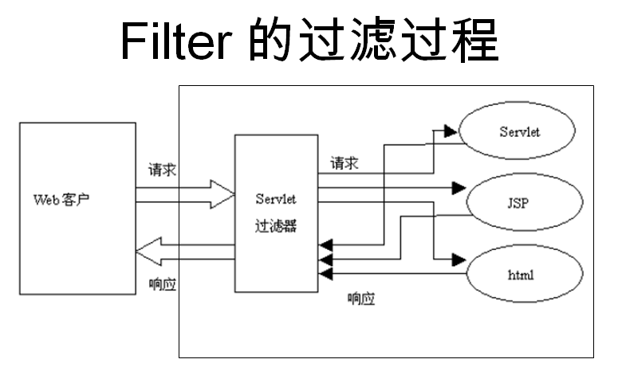

JSP Filtros
Los filtros en JSP y Servlet son clases de Java.
Los filtros pueden interceptar dinámicamente solicitudes y respuestas para transformar o utilizar la información contenida en la solicitud o respuesta.
Se puede adjuntar uno o más filtros a un Servlet o a un grupo de Servlets. Los filtros también se pueden adjuntar a archivos JavaServer Pages (JSP) y a páginas HTML.
Los filtros son clases de Java que se pueden utilizar en la programación de Servlets y pueden lograr los siguientes propósitos:
- Interceptar las solicitudes del cliente antes de que accedan a los recursos del backend.
- Procesar las respuestas del servidor antes de que se envíen de vuelta al cliente.
Varios tipos de filtros recomendados según la especificación:
- Filtros de autenticación (Authentication Filters).
- Filtros de compresión de datos (Data compression Filters).
- Filtros de cifrado (Encryption Filters).
- Filtros de activación de eventos de acceso a recursos.
- Filtros de conversión de imágenes (Image Conversion Filters).
- Filtros de registro y auditoría (Logging and Auditing Filters).
- Filtros de cadena MIME-TYPE (MIME-TYPE Chain Filters).
- Filtros de tokenización (Tokenizing Filters).
- Filtros XSL/T (XSL/T Filters), que transforman contenido XML.
Los filtros se declaran mediante etiquetas XML en el descriptor de despliegue web (web.xml) y luego se mapean a nombres de Servlet o patrones de URL en el descriptor de despliegue de su aplicación.
Cuando el contenedor Web inicia la aplicación web, crea una instancia de cada filtro que usted ha declarado en el descriptor de despliegue.
El orden de ejecución de los filtros es coherente con el orden de configuración en el archivo web.xml; generalmente se configuran los filtros antes de todos los Servlets.

Métodos de filtro de Servlet
Un filtro es una clase de Java que implementa la interfaz javax.servlet.Filter. La interfaz javax.servlet.Filter define tres métodos:
| N.º | Método y descripción |
|---|---|
| 1 | public void doFilter (ServletRequest, ServletResponse, FilterChain) Este método realiza la operación de filtrado real. Cuando la solicitud del cliente coincide con la URL configurada para el filtro, el contenedor de Servlet llama primero al método doFilter del filtro. FilterChain se utiliza para acceder a los filtros posteriores. |
| 2 | public void init(FilterConfig filterConfig) Cuando se inicia la aplicación web, el servidor web crea una instancia del objeto Filter y llama a su método init, lee la configuración de web.xml y completa la inicialización del objeto, preparando así la intercepción para las solicitudes posteriores de los usuarios (el objeto filter solo se crea una vez, y el método init también se ejecuta solo una vez). A través de los parámetros del método init, el desarrollador puede obtener el objeto FilterConfig que representa la información de configuración actual del filtro. |
| 3 | public void destroy() El contenedor de Servlet llama a este método antes de destruir la instancia del filtro, y en este método se liberan los recursos ocupados por el filtro de Servlet. |
Uso de FilterConfig
En el método init de Filter se proporciona un objeto FilterConfig.
Por ejemplo, la configuración del archivo web.xml es la siguiente:
<filter> <filter-name>LogFilter</filter-name> <filter-class>com.ejemplo.test.LogFilter</filter-class> <init-param> <param-name>Site</param-name> <param-value>Ejemplo</param-value> </init-param> </filter>
En el método init, utilice el objeto FilterConfig para obtener los parámetros:
public void init(FilterConfig config) throws ServletException {
// 获取初始化参数
String site = config.getInitParameter("Site");
// 输出初始化参数
System.out.println("网站名称: " + site);
}
Ejemplo de filtro JSP
El siguiente es un ejemplo de un filtro de Servlet que generará el nombre y la dirección del sitio web. Este ejemplo le brinda una comprensión básica de los filtros de Servlet; puede usar los mismos conceptos para escribir aplicaciones de filtro más complejas:
//导入必需的 java 库
import javax.servlet.*;
import java.util.*;
//实现 Filter 类
public class LogFilter implements Filter {
public void init(FilterConfig config) throws ServletException {
// 获取初始化参数
String site = config.getInitParameter("Site");
// 输出初始化参数
System.out.println("网站名称: " + site);
}
public void doFilter(ServletRequest request, ServletResponse response, FilterChain chain) throws java.io.IOException, ServletException {
// 输出站点名称
System.out.println("站点网址：http://www.example.com");
// 把请求传回过滤链
chain.doFilter(request,response);
}
public void destroy( ){
/* 在 Filter 实例被 Web 容器从服务移除之前调用 */
}
}
El código del archivo DisplayHeader.java es el siguiente:
//导入必需的 java 库
import java.io.IOException;
import java.io.PrintWriter;
import java.util.Enumeration;
import javax.servlet.ServletException;
import javax.servlet.annotation.WebServlet;
import javax.servlet.http.HttpServlet;
import javax.servlet.http.HttpServletRequest;
import javax.servlet.http.HttpServletResponse;
@WebServlet("/DisplayHeader")
//扩展 HttpServlet 类
public class DisplayHeader extends HttpServlet {
// 处理 GET 方法请求的方法
public void doGet(HttpServletRequest request, HttpServletResponse response) throws ServletException, IOException
{
// 设置响应内容类型
response.setContentType("text/html;charset=UTF-8");
PrintWriter out = response.getWriter();
String title = "HTTP Header 请求实例 - Ejemplo实例";
String docType =
"<!DOCTYPE html> \n";
out.println(docType +
"<html>\n" +
"<head><meta charset=\"utf-8\"><title>" + title + "</title></head>\n"+
"<body bgcolor=\"#F0F0F0\">\n" +
"<h1 align=\"center\">" + title + "</h1>\n" +
"<table width=\"100%\" border=\"1\" align=\"center\">\n" +
"<tr bgcolor=\"#949494\">\n" +
"<th>Header 名称</th><th>Header 值</th>\n"+
"</tr>\n");
Enumeration headerNames = request.getHeaderNames();
while(headerNames.hasMoreElements()) {
String paramName = (String)headerNames.nextElement();
out.print("<tr><td>" + paramName + "</td>\n");
String paramValue = request.getHeader(paramName);
out.println("<td> " + paramValue + "</td></tr>\n");
}
out.println("</table>\n</body></html>");
}
// 处理 POST 方法请求的方法
public void doPost(HttpServletRequest request, HttpServletResponse response) throws ServletException, IOException {
doGet(request, response);
}
}
Mapeo de filtros de Servlet en Web.xml (Servlet Filter Mapping)
Definir un filtro, y luego mapearlo a una URL o Servlet, es aproximadamente lo mismo que definir un Servlet y luego mapearlo a un patrón de URL. En el archivo descriptor de despliegueweb.xmlcree las siguientes entradas para la etiqueta filter:
<?xml version="1.0" encoding="UTF-8"?>
<web-app>
<filter>
<filter-name>LogFilter</filter-name>
<filter-class>com.ejemplo.test.LogFilter</filter-class>
<init-param>
<param-name>Site</param-name>
<param-value>Ejemplo</param-value>
</init-param>
</filter>
<filter-mapping>
<filter-name>LogFilter</filter-name>
<url-pattern>/*</url-pattern>
</filter-mapping>
<servlet>
<!-- 类名 -->
<servlet-name>DisplayHeader</servlet-name>
<!-- 所在的包 -->
<servlet-class>com.ejemplo.test.DisplayHeader</servlet-class>
</servlet>
<servlet-mapping>
<servlet-name>DisplayHeader</servlet-name>
<!-- 访问的网址 -->
<url-pattern>/TomcatTest/DisplayHeader</url-pattern>
</servlet-mapping>
</web-app>
El filtro anterior se aplica a todos los Servlets, porque en la configuración especificamos/*. Si desea aplicar el filtro solo a unos pocos Servlets, puede especificar una ruta de Servlet concreta.
Ahora intente llamar a cualquier Servlet de la manera habitual; verá los registros generados en el servidor web. También puede usar el registrador Log4J para registrar los registros anteriores en un archivo separado.
A continuación, accedemos a la dirección de este ejemplohttp://localhost:8080/TomcatTest/DisplayHeader, y luego vemos el contenido de salida en la consola, como se muestra a continuación:

Usar múltiples filtros
Las aplicaciones web pueden definir varios filtros diferentes según propósitos específicos. Supongamos que usted define dos filtrosAuthenFilteryLogFilter. Debe crear un mapeo diferente como se describe a continuación; el resto del procesamiento es aproximadamente el mismo que el explicado anteriormente:
<filter> <filter-name>LogFilter</filter-name> <filter-class>com.ejemplo.test.LogFilter</filter-class> <init-param> <param-name>test-param</param-name> <param-value>Initialization Paramter</param-value> </init-param> </filter> <filter> <filter-name>AuthenFilter</filter-name> <filter-class>com.ejemplo.test.AuthenFilter</filter-class> <init-param> <param-name>test-param</param-name> <param-value>Initialization Paramter</param-value> </init-param> </filter> <filter-mapping> <filter-name>LogFilter</filter-name> <url-pattern>/*</url-pattern> </filter-mapping> <filter-mapping> <filter-name>AuthenFilter</filter-name> <url-pattern>/*</url-pattern> </filter-mapping>
Orden de aplicación de los filtros
El orden de los elementos filter-mapping en web.xml determina el orden en que el contenedor web aplica los filtros a los Servlets. Para invertir el orden de los filtros, solo necesita invertir los elementos filter-mapping en el archivo web.xml.
Por ejemplo, el ejemplo anterior primero aplicará LogFilter y luego AuthenFilter, pero el siguiente ejemplo invertirá este orden:
<filter-mapping> <filter-name>AuthenFilter</filter-name> <url-pattern>/*</url-pattern> </filter-mapping> <filter-mapping> <filter-name>LogFilter</filter-name> <url-pattern>/*</url-pattern> </filter-mapping>
Explicación de los nodos de configuración en web.xml
<filter>Especifica un filtro.<filter-name>Se utiliza para especificar un nombre para el filtro; el contenido de este elemento no puede estar vacío.<filter-class>El elemento se utiliza para especificar el nombre de clase totalmente calificado del filtro.<init-param>El elemento se utiliza para especificar parámetros de inicialización para el filtro; sus subelementos<param-name>especifican el nombre del parámetro,<param-value>especifican el valor del parámetro.- En el filtro, se puede usar
FilterConfigel objeto de interfaz para acceder a los parámetros de inicialización.
<filter-mapping>El elemento se utiliza para configurar los recursos que un Filter es responsable de interceptar. Los recursos interceptados por un filtro se pueden especificar de dos maneras: el nombre del Servlet y la ruta de solicitud de acceso al recurso.<filter-name>El subelemento se utiliza para establecer el nombre de registro del filtro. Este valor debe ser<filter>el nombre del filtro declarado en el elemento<url-pattern>Establece la ruta de solicitud interceptada por el filtro (el patrón de URL asociado al filtro).
<servlet-name>Especifica el nombre del Servlet interceptado por el filtro.<dispatcher>Especifica la manera en que el recurso interceptado por el filtro es invocado por el contenedor de Servlet; puede serREQUEST,INCLUDE,FORWARDyERRORuno de ellos; por defectoREQUEST. El usuario puede configurar múltiples<dispatcher>subelementos para especificar que el filtro intercepte múltiples formas de invocación del recurso.<dispatcher>Los valores que se pueden configurar para el subelemento y su significadoREQUEST: Cuando el usuario accede directamente a la página, el contenedor web llamará al filtro. Si el recurso de destino se accede mediante los métodos include() o forward() de RequestDispatcher, entonces el filtro no será invocado.INCLUDE: Si el recurso de destino se accede mediante el método include() de RequestDispatcher, entonces el filtro será invocado. Aparte de eso, el filtro no será invocado.FORWARD: Si el recurso de destino se accede mediante el método forward() de RequestDispatcher, entonces el filtro será invocado; aparte de eso, el filtro no será invocado.ERROR: Si el recurso de destino se invoca mediante el mecanismo declarativo de manejo de excepciones, entonces el filtro será invocado. Aparte de eso, el filtro no será invocado.